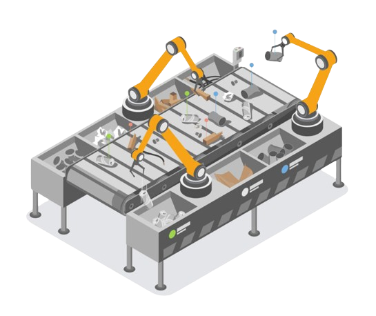

Usamos Inteligêncial Artificial nos nossos sistemas
Por meio de algoritmos avançados, sistemas inteligentes e visão computacional, a IA está revolucionando os processos de gestão e reciclagem de resíduos de várias maneiras, trazendo inovação sustentável e tecnologia de reciclagem que promovem um impacto ambiental positivo e incentivam a economia circular.
Um exemplo é o uso de algoritmos de machine learning para aprimorar os processos de triagem de resíduos. Esses algoritmos são capazes de analisar grandes volumes de dados e identificar padrões complexos nos materiais recicláveis, permitindo uma separação mais eficiente e precisa dos componentes eletrônicos. Isso não apenas aumenta a otimização de processos de reciclagem, mas também reduz o desperdício e maximiza o aproveitamento de materiais.
Além disso, a inteligência artificial está sendo empregada em sistemas de visão computacional para identificar e separar materiais recicláveis com maior precisão. Esses sistemas utilizam câmeras e sensores para escanear os resíduos eletrônicos em tempo real, identificando automaticamente os materiais e classificando-os de acordo com sua composição. Isso permite uma separação mais eficiente e precisa dos materiais, facilitando o processo de reciclagem e aumentando a quantidade de materiais recuperados.
Nos últimos anos, a indústria de gestão de resíduos tem se voltado para a automatização de procedimentos, começando pelo processo de coleta. Lixeiras inteligentes com IA, por exemplo, usam sensores e câmeras para monitorar o nível de resíduos, detectar contaminação e otimizar a programação de coleta, a fim de melhorar a alocação de recursos e reduzir coletas desnecessárias. Ao aprender com dados históricos por meio de algoritmos de aprendizado de máquina, essas lixeiras inteligentes podem fornecer insights valiosos sobre a geração de resíduos e padrões futuros de demanda que seriam impossíveis de prever de outra forma, obtendo economia de custos e também reduzindo o impacto negativo no meio ambiente.
Confira essa e outras tecnologias no nosso sistema
Sistema customizável para cada empresa, para cada situação